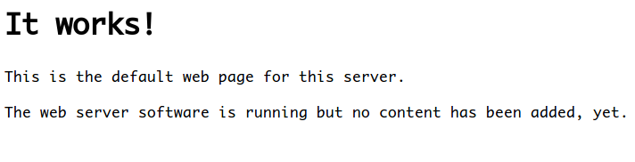
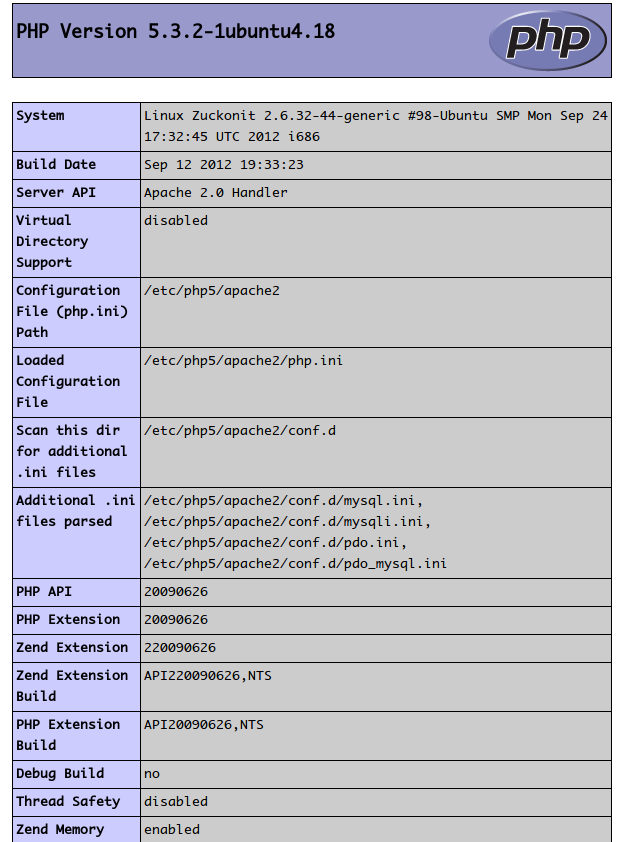

Ubuntu Lamp
What is LAMP
- Linux Apache Mysql Php
- it is a free web developing environment
How to install lamp in ubuntu
sudo tasksel install lamp-server
Yeah, believe your eyes, it is just so easy to install lamp in ubuntu.
During the process, which will let you set the root password of mysql.
Whether your installation is successful
*Test apache
open such link in your browser:
http://localhost
you will see:

*Test php
add test.php
sudo echo "<?php phpinfo();?>" > /var/www/test.php
restart apache
sudo /etc/init.d/apache2 restart
open such link in your browser:
http://localhost/test.php
you will see:

Then, just enjoy it:)
Comments !